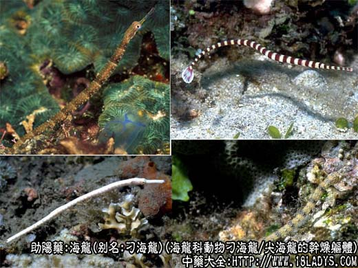
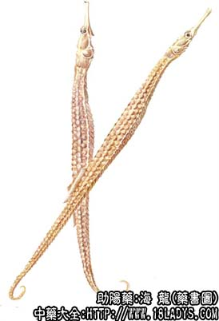

原文连接:https://www.daquan.com/post/2240.html



海龙为少常用中药。始载《本草纲目拾遗》。商品有大海龙和尖海龙两种。
来源：为海龙科动物刁海龙（大海龙）除去内脏的干燥躯体和尖海龙的干燥躯体。海产品。
1、大海龙
产地：主产于广东，此外福建、台湾等沿海地带亦有生产。
性状鉴别：呈长扁棱方形，背部平直下陷，腹部弧形突出，尾渐细，先端卷曲。长35～50厘米，背部宽约1厘米，腹部高2～2.5厘米。头平伸，嘴长管状，两眼圆大而深陷，鳃盖略突起，具放射状线纹。颈部膨大，颈背棱嵴状具棘2枚，两侧及下方具棘2对。胸鳍位于颈胸连接处。胸腹扁5棱形，两侧中部另有不显著的线形棱。尾前部6棱形，中后部4棱形。背鳍位于尾背前部，无尾鳍。雄性有育儿囊。全体为软骨样物质形成的甲壳状躯体，密被鳞片样圆形花斑。背部两条棱嵴灰黑色，呈花边样带纹，其余部位呈黄白色或黄棕色，放大镜下观察花纹规律美观，有蜡样光泽。体轻，质坚韧，不易碎断。气微腥，味微咸。
2、尖海龙
产地：主产于山东、广东、辽宁等沿海地区。
性状鉴别：体细长棱条形，略扭曲，形似小蛇（故又名海蛇）。全长15～20厘米，高宽几乎相等，约4毫米。嘴细长管状。脊柱隆起，躯干呈7棱形，尾部4棱形，腹尾下方呈凹槽状。尾渐细不卷曲，并有尾鳍。全体棕黄色或淡灰褐色。放大镜下观察，周身有横出直线纹和斜线纹，交错而生。体轻，质稍韧，易折断。气微腥，味微咸。
以躯体匀整，无碎断，灰褐色者为佳。
主要成分：含蛋白质。
药理作用：滋阴、补肾、消瘀、散结，其作用似为滋养、强壮，增强全身抵抗力。
炮制：生用。
效用：均与海马相同。
临床应用：1、用于治疗瘰疠（慢性淋巴结炎、淋巴结核）、瘿瘤（单纯性甲状腺肿），配冬菇、紫菜、红枣，方如海龙汤。
3、用于高血压，配紫菜煮汤。
使用注意：有外感和胃弱者忌用。
用量：4.5～12g
处方举例：海龙汤：海龙9g，冬菇（或香蕈）18g，紫菜9g，红枣30g，水煎服。
注：除以上海龙、尖海龙外，尚有同科动物拟海龙和粗吻海龙，局部地区亦作海龙使用，市场少见。北京习销大海龙。